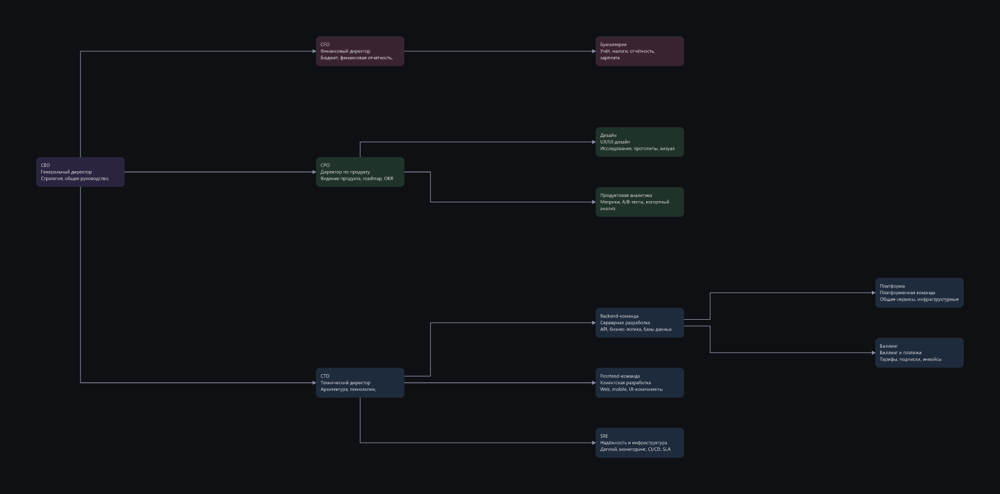
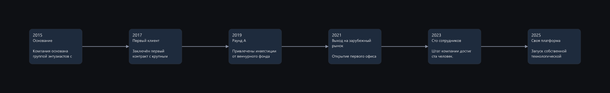
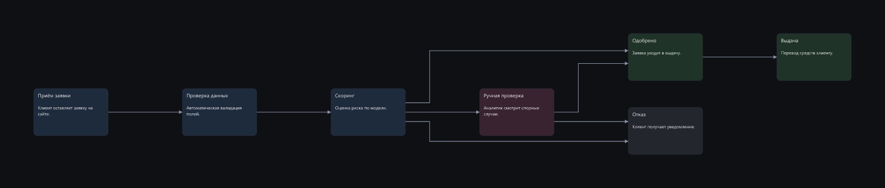
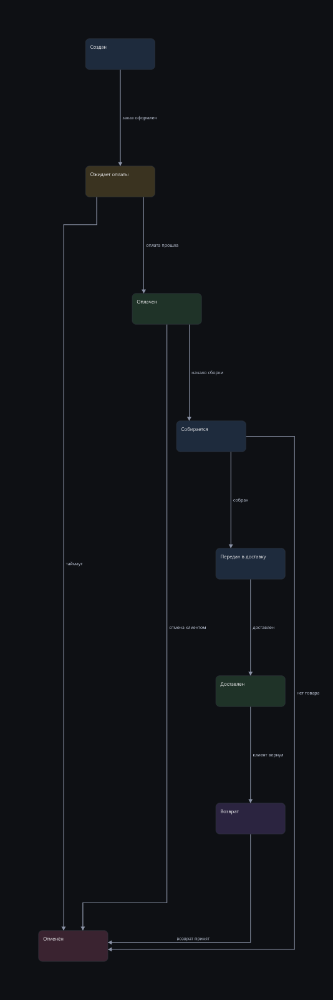
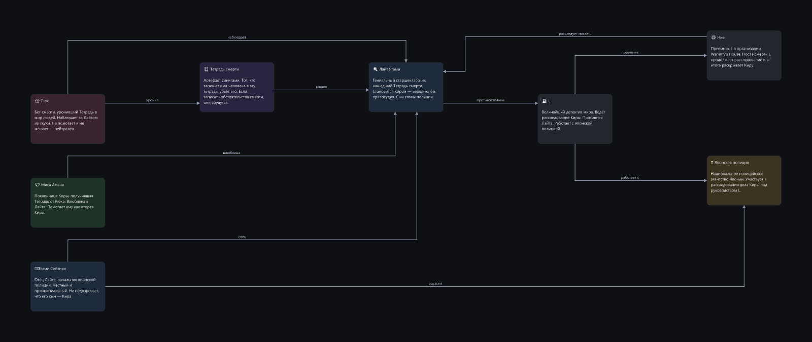
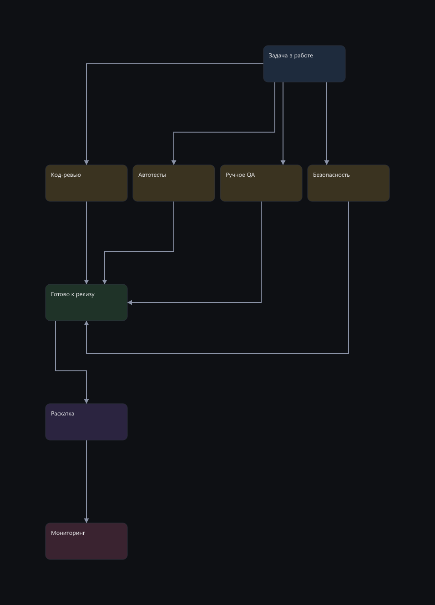
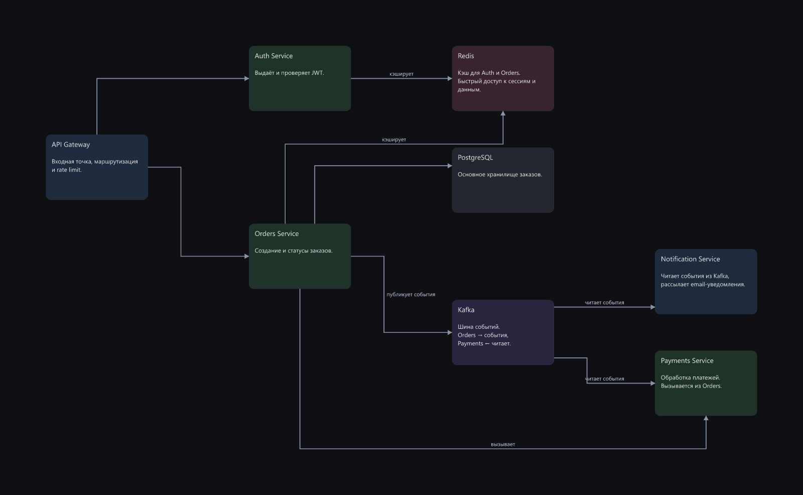
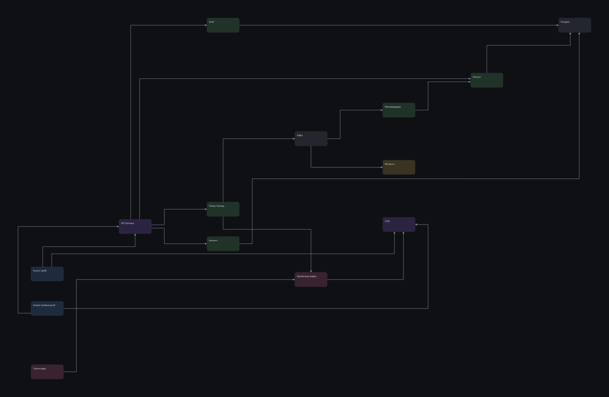

Сравнение прогонов E09 → E12
Модель deepseek-v4-flash, пул из 8 задач. Клик по картинке — открыть в полном размере.
88 → 91средний score
8/8 → 8/8без жёстких конфликтов
4 → 3пересечений стрелок
tree-org без изменений
иерархия, ветви должны держаться у своих корней
E09 100/100
медиана
13 итераций · 0 пересечений · отказов 0 · без конфликтов 100%

E12 100/100
медиана
7 итераций · 0 пересечений · отказов 0 · без конфликтов 100%

wide-timeline без изменений
композиция, которой идейно положено быть широкой и низкой
E09 100/100
медиана
8 итераций · 0 пересечений · отказов 0 · без конфликтов 100%

E12 100/100
медиана
13 итераций · 0 пересечений · отказов 5 · без конфликтов 100%

fix-broken без изменений
починка готовой плохой схемы, а не постройка с нуля
E09 96/100
медиана
7 итераций · 0 пересечений · отказов 0 · без конфликтов 100%

E12 96/100
медиана
6 итераций · 0 пересечений · отказов 0 · без конфликтов 100%

states-order +1
граф с циклами и обратными связями
E09 94/100
медиана
7 итераций · 0 пересечений · отказов 0 · без конфликтов 100%

E12 95/100
медиана
9 итераций · 0 пересечений · отказов 0 · без конфликтов 100%

wiki-anime +1
вики по документу, чистый лист, 8-10 узлов, дерево связей
E09 94/100
медиана
8 итераций · 0 пересечений · отказов 0 · без конфликтов 100%

E12 95/100
медиана
7 итераций · 0 пересечений · отказов 0 · без конфликтов 100%

tight-row +6
особое требование внутри настоящей схемы: часть узлов плотным рядом
E09 85/100
медиана
19 итераций · 0 пересечений · отказов 6 · без конфликтов 100%

E12 91/100
медиана
24 итераций · 0 пересечений · отказов 2 · без конфликтов 100%

extend-existing +7
дополнение готового графа новыми узлами без ломки старого
E09 83/100
медиана
8 итераций · 0 пересечений · отказов 0 · без конфликтов 100%

E12 90/100
медиана
7 итераций · 0 пересечений · отказов 0 · без конфликтов 100%

dense-arch +9
стресс: 14 узлов, плотный граф, несколько подсистем
E09 53/100
медиана
9 итераций · 4 пересечений · отказов 0 · без конфликтов 100%

E12 62/100
медиана
16 итераций · 3 пересечений · отказов 0 · без конфликтов 100%
